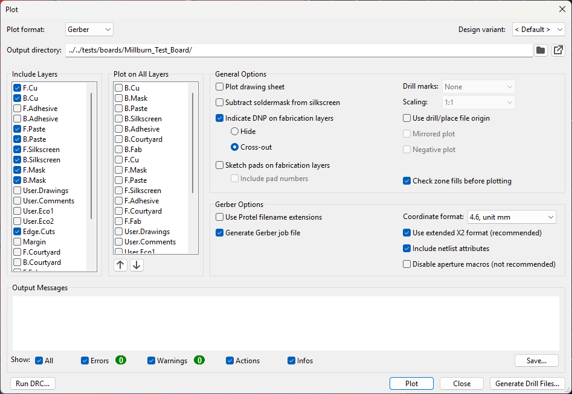
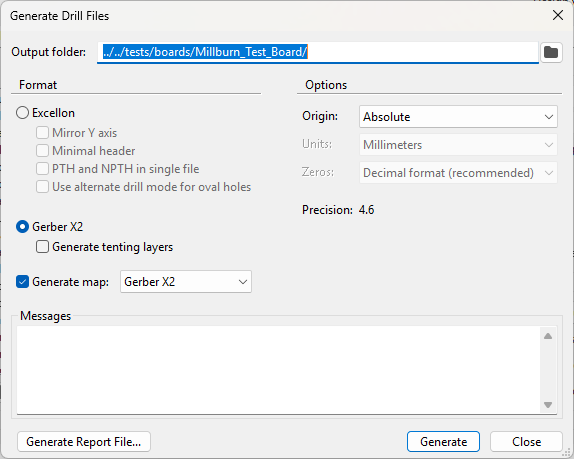

PCB_MillBurn reads the files KiCad writes, not the KiCad project. Almost everything it knows about your board comes from how those files were exported: which one is the top copper, which holes are plated, and where the origin is.
Most of KiCad’s defaults are already right. The settings below are the ones that matter, with the reason for each. The labels and pictures are from KiCad 10; older versions word some of them differently, and lay out the drill dialog differently too.
| Setting | Set to | Why |
|---|---|---|
| Use extended X2 format | On | Every file states what it is. The most important one. |
| Include layers | See below | Copper, mask, silkscreen and Edge.Cuts are what a board is made from. |
| Plot on All Layers | Nothing | An outline plotted onto the copper would be isolated like a trace. |
| Plot drawing sheet | Off | The page border and title block would be drawn onto every layer, copper included. |
| Use drill/place file origin | Off | Any origin works, as long as the drill files use the same one. See below. |
| Include netlist attributes | On | Pads and nets are named in the files. |
| Disable aperture macros | Off | Macros are read; turning them off only makes the files larger. |
| Use Protel filename extensions | Off | Both are read. KiCad’s own names (-F_Cu.gbr) still help if a file is ever renamed. |
| Coordinate format | 4.6, unit mm | KiCad’s default. 4.5 is read too. |
| Check zone fills before plotting | On | The copper pours in the files match the board you are looking at. |
| Generate Gerber job file | Either | KiCad writes it; PCB_MillBurn does not read it. |
| Output directory | One folder | One folder per board, the same one every time. |
Layers to include: F.Cu, B.Cu, F.Mask, B.Mask, F.Silkscreen, B.Silkscreen and Edge.Cuts. Add F.Paste and B.Paste if you like: they are read and drawn, and will matter once solder paste is supported. User layers come in as Unknown and cannot be exported, so leave them out unless you want to look at them.

| Setting | Set to | Why |
|---|---|---|
| Format | Excellon or Gerber X2 | Both are read. The picture below uses Gerber X2. |
| PTH and NPTH in single file (Excellon) | Off | Plated and non-plated holes come in as separate layers, so each gets its own settings and files. |
| Minimal header (Excellon) | Off | The header is where an Excellon file says whether its holes are plated. |
| Mirror Y axis (Excellon) | Off | The app mirrors bottom-side work itself. |
| Use alternate drill mode for oval holes (Excellon) | Off | Slots are written as routed paths. The alternate mode (G85) is read too. |
| Generate tenting layers (Gerber X2) | Off | Not needed for the mill or the laser, so the folder holds only the files the board is made from. |
| Origin | Absolute | The same origin as the Gerbers. See below. |
| Units (Excellon) | Millimeters | Matches the Gerbers. |
| Zeros (Excellon) | Decimal format | KiCad’s recommendation. The zero-suppressed formats are read too. |
| Generate map | On, Gerber X2 | Optional. Only a Gerber map is read; it shows as a Drill map layer. |
Then Generate. It writes the drill files, and the maps when Generate map is ticked. Generate Report File… is not needed: the report is not read.

With X2 on, the top of every Gerber carries a line such as
%TF.FileFunction,Copper,L1,Top*%. That line is how PCB_MillBurn knows a file is the top
copper, the board outline or the plated holes. Getting that wrong would route the wrong geometry to
the wrong operation.
Without it, the app falls back to the file name (F_Cu, Edge_Cuts and so on).
That usually works, but it is a guess, and the app labels it as one in the checks panel. Rename a
file to something tidier and the guess changes with it. Older KiCad versions write the same
information as comments rather than attributes, and both forms are read.
The Gerbers and the drill files must be measured from the same point. If the plot uses the drill/place file origin and the drill files use Absolute, or the other way round, every hole lands a fixed distance away from its pad. The mismatch is easy to miss, because each file looks right on its own.
Which origin you choose does not matter to PCB_MillBurn: it moves everything to the board’s lower-left corner, or the stock’s, before writing a single program. Only the agreement matters. Leaving both at their defaults (plot origin off, drill origin Absolute) is the simplest way to get it.
Check it once after importing: turn on the copper and the plated holes, and look at a few pads. Every hole should sit in the middle of its pad. If they are all shifted the same way, the two origins disagree; export again with both set the same.
PCB_MillBurn treats plated and non-plated holes as two layers, each with its own settings, drilling
files and page. It knows which is which from the file: Gerber X2 drill files say so in their
FileFunction, and Excellon files say so in a comment in their header, such as
; #@! TF.FileFunction,Plated,1,2,PTH. Putting both in one file, or turning on
Minimal header, removes that information.
A drill map is a drawing: one symbol per drill size at every hole, and a table of sizes and counts. Exported as Gerber, it comes in as a Drill map layer, hidden until you turn it on, and is never exported. It is a quick way to see which holes are which size.
KiCad writes one map for the plated holes and one for the non-plated, and puts both tables in the same place below the board. Turn on one map at a time, or the two tables print over each other.
.gbrjob). It includes a board thickness, but that
is KiCad’s stackup setting, not a measurement of your stock. Set the thickness in
Project info; it is saved with the project.After a design change, export into the same folder again and use File › Refresh from source. It compares the project with the folder and shows what actually changed before applying anything. KiCad stamps a new date into every file on every export, so it compares the geometry, not the bytes, and an unchanged layer is reported as unchanged.
Using another EDA tool? The same three things matter: turn on X2 attributes if the tool offers them, keep plated and non-plated holes apart, and give the Gerbers and the drill files the same origin.